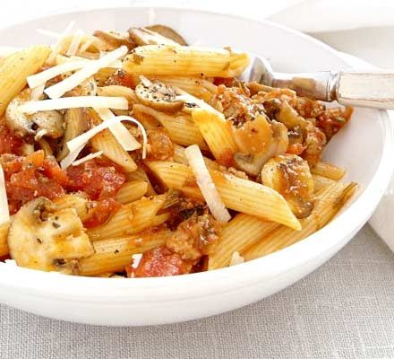

Quick Sasuage bolognese
Ingredients
6 good-quality sausages, skins removed
1 tsp fennel seed
250g pack mushroom, sliced
150ml red wine (optional)
660g jar tomato pasta sauce (we used Loyd Grossman’s tomato & chilli)
300g penne
grated or shaved parmesan, to serve
Method
STEP 1
Heat a large, wide frying pan, then crumble in the sausage meat and fennel seeds (there’s no need to add any oil).
Fry for a few mins until golden and the fat is released, stirring well to break up the meat.
Add the mushrooms and fry for a few mins until beginning to soften. Stir in the wine now, if using, bubble for 1 min, then add the tomato sauce and heat through until bubbling.
STEP 2
Meanwhile, boil the penne. When ready, drain and tip into the sauce.
Mix well until completely coated, then divide between four plates, finishing with a little parmesan.
